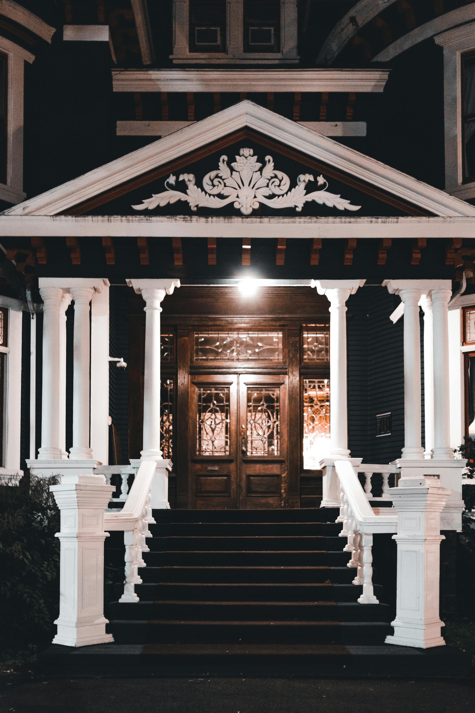

Contact & Visit Us

We welcome visitors, researchers, and community members to connect with us. Whether you want to tour the museum, ask a question, or learn more about our programs, we are here to help.
Museum Location
Dillingham‑Lewis House Museum
101 SW 15th Street
Blue Springs, MO 64015
Chicago & Alton Hotel
Built: 1878
The Chicago & Alton Hotel is the oldest surviving business building in Blue Springs. Built by J.K. Parr, the structure later received a Victorian facelift based on its original paint colors. The building is currently in need of full renovation and is not open for tours.
Location: 1108 SW Walnut Street, Blue Springs, MO 64015
Chicago & Alton Train Depot Museum
The original depot was built in 1879 and destroyed by fire in the early 1920s. Because Blue Springs remained an important transportation center for industry, livestock, and travelers, the city requested the Chicago & Alton Railroad rebuild it.
Today, this depot is the last one-story, wood-and-stucco Chicago & Alton depot still standing in Missouri. It reopened for tours in 2018 and is open April through December, three days a week (closed on holidays).
Location: 1108 SW Walnut Street, Blue Springs, MO
Dillingham-Lewis House Museum
This seven-room Victorian home was built in 1906 by Morgan Vachel Dillingham. From 1928 to 1947, Miss Narra Lewis resided in the home. The Blue Springs Historical Society purchased the property in 1976 and operates it as a museum.
The museum is closed for winter and will reopen in April.
Location: 101 SW 15th Street, Blue Springs, MO 64015
Phone: (816) 224-8979
Hours
Tours are available April through December, three days a week. Closed on holidays.
Contact Form
Additional Contact Information
- Email: bshsmuseum@gmail.com
- Phone: (816) 224‑8979
- Mailing Address: PO Box 762, Blue Springs, MO 64013
Plan Your Visit
Visitors are encouraged to explore the museum, attend an event, or learn more about our preservation efforts. We look forward to welcoming you.